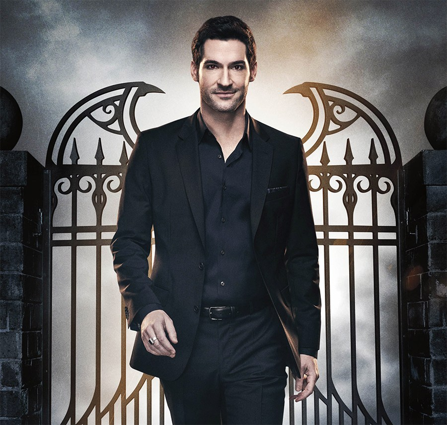

Thomas John Ellis (Cardiff, 17 de Novembro de 1978) é um ator britânico nascido no País de Gales.
É conhecido por interpretar Lucifer Morningstar na série Lucifer da emissora Fox.
Em 15 de junho de 2018 a serie passou a pertencer à Netflix.
Seus papéis notáveis incluem Justyn em Channel 4's No Angels, Thomas Milligan na série de ficção científica Doctor Who
e Robbin Hood em Once Upon a Time. Em julho e agosto de 2009, Ellis estrelou o drama de comédia ITV Monday Monday
com Fay Ripley. Ele também foi eleito como inspetor detetive Bland no Poirot de Agatha Christie. Ellis foi a
estrela da série de rede dos EUA ,Rush, interpretando um médico de Hollywood.
Em fevereiro de 2015 foi anunciado que Ellis foi lançado como Lucifer Morningstar na serie produzida pela Fox Television, Lucifer,
com base no quadrinho de mesmo nome, que estreou em 25 de janeiro de 2016.